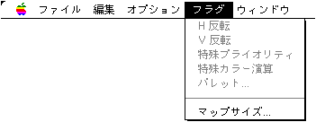
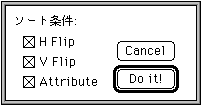

★Graphic Tools Guide
★MAP/SCREENエディタユーザーズマニュアル
★Graphic Tools Guide
★MAP/SCREENエディタユーザーズマニュアル
▲
戻る｜
進む▼
MAP/SCREENエディタユーザーズマニュアル
■イメージメニュー

- キャラクタウィンドウがアクティブな場合使用できます。キャラクタデータを直接編集します。
- ●鏡像
- 選択範囲のキャラクタイメージを反転します。
- ◆横反転
- イメージを水平方向に反転します。
- ◆縦反転
- イメージを垂直方向に反転します。
- ●回転
- 選択範囲のキャラクタイメージを回転します。
- ◆+90°
- イメージを反時計方向に90度回転します。
- ◆-90°
- イメージを時計方向に90度回転します。
- ●アトリビュート...
- 指定範囲のキャラクタにアトリビュートデータを設定します。『Screen Editor』は、この機能を利用することはできません。
- ●表示パレット...
- キャラクタウィンドウの表示に利用するパレットを指定します。ここで設定する情報は、出力ファイルには特に影響しません。直観的な視覚効果に基づいて編集効率を向上させることを目的としています。
- ●ソート...
- 指定範囲のキャラクタデータを、条件に従ってマージし、並び変えます。結果は、マップウィンドウのパターンネームデータに反映されます。
主に、キャラクタデータを詰めて、ある一定のデータ量に収めることを目的として使用されます。

- ◆H Flip
- 横反転したイメージもマージ対象とします。マップウィンドウのには、横反転フラグを設定します。
- ◆V Flip
- 縦反転したイメージもマージ対象とします。マップウィンドウのには、縦反転フラグを設定します。
- ◆Attribute
- アトリビュートデータもマージ対象とします。
『Screen Editor』は、この機能を利用することはできません。
- ●オフセット...
- 指定オフセット数キャラクタデータ全体を移動します。移動の結果は、マップウィンドウのパターンネームデータに反映されます。
主に、何らかの規定・制限事項が後から生じ、既に編集されたキャラクタ・マップデータに移動の必要がある場合に使用されます。
- ●使用チェック
- 現在のマップデータに存在しないキャラクタを#0コードで消去します。
主に、判別しにくいキャラクタデータや複雑なマップデータから無駄なデータを省くことを目的として使用されます。「ソート」と組み合わせて、効果的に使用します。
▲
戻る｜
進む▼
★Graphic Tools Guide
★MAP/SCREENエディタユーザーズマニュアル
Copyright SEGA ENTERPRISES, LTD., 1997